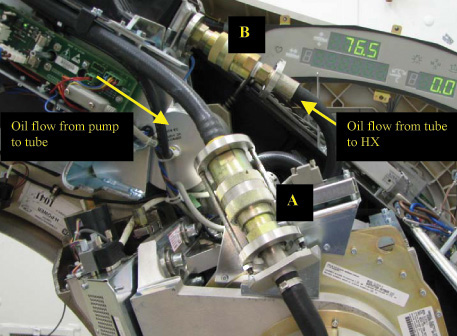
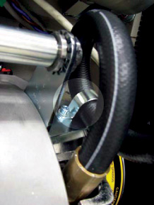
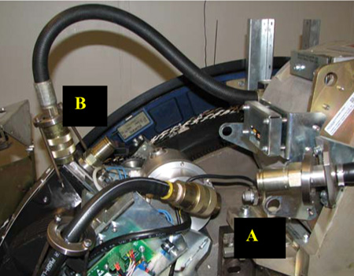
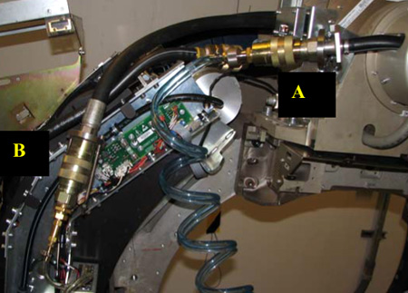

Operating Documentation
Direction 5193891-800, Rev# 5
LightSpeed 5.X Pro16 Limited Access Service Information (Adv)
Operating Documentation |
| Required Persons | Preliminary Reqs | Procedure | Finalization |
|---|---|---|---|
| 1 | Timing Not Applicable | 1 hour |
The high voltage coolant system consists of the Heat Exchanger, Oil Pump, and X-Ray Tube. By definition this is a closed system. However events can occur that introduce air into this system. This can result in unusual Image Artifacts and/or tube over temperature issues. This procedure can prevent the need to replace the Heat Exchanger, Oil Pump, and X-Ray Tube components.
| Last Revised: | 11 November 2005 |
| Item | Qty | Effectivity | Part# | Manufacturer | |
|---|---|---|---|---|---|
| Flow Meter | 1 | - | 5151781 | - | |
| Hercules Coolant Air Removal Kit | 1 | - | 5151778 | - | |
| Oil Compensation Tool (Recommended) | 1 | - | 5125182 | - | |
| Item | Qty | Effectivity | Part# | Manufacturer |
|---|---|---|---|---|
| Transformer Oil | - | T0552G (1 gallon) | - | |
| Dry Wipes | - | - | - | |
| Latex Gloves (optional) | - | - | - |
| POTENTIAL FOR BURNS. | |
| SEVERE PERSONAL INJURY CAN OCCUR VIA BURNS FROM CONTACT WITH HOT OIL. | |
| Do not service while tube and oil are hot (See required condition, below). |
| Condition | Reference | Eff |
|---|---|---|
No X-Ray exposures have been made for AT LEAST one (1) hour. Tube casing and oil hoses are cool to the touch. | - | - |
Q: Can I use silicone-based oil in this procedure?
A: NO. The part number for oil is included in this procedure and you may not deviate.
Q: Can I use this tool and procedure for water based coolant systems (MCS 7079 tubes)?
A: NO. Use kit number 5115466, Performix Pro Purge Kit. Introducing water-based coolant into this tool will require replacement of the Heat Exchanger, Oil Pump, and X-Ray Tube, as a complete set. Additionally this tool will need to be scrapped. Do not contaminate with water-based coolants.
Q: How often should this procedure be performed?
A: There is no standard answer. It is recommended that this procedure be performed when the Heat Exchanger Compensation procedure is done, approximately every third tube change. This procedure can also be used for troubleshooting when unusual Image Artifacts or tubes over temperature issues exist.

Remove the reservoir cap and place funnel into tank. Place rags around funnel to capture any spilled oil.
Illustration 1: Funnel and Spill Rags

Fill reservoir with approximately 1 US gallon of transformer oil, part number T0552G.
At a minimum, make sure the reservoir is 1/2 full prior to starting the air removal procedure.
The reservoir’s volume is approximately 5 liters (1.3 gallons).
| Prior to starting the air removal procedure, air must be removed from the large blue hose. The objective of the following steps is to clear the air from the large blue hose, prior to pumping oil into the tube oil circuit. | |
Connect the female and male disconnects as shown.
Illustration 2: Connect female and male disconnects

Plug in the power supply.
| NOTE: | The power supply as shown is set up for 115V operation. However, it is a universal power supply and will work internationally with the correct interface adapter. |
Illustration 3: Plug in the power supply

Turn ON the power to the pump by actuating the rocker switch.
| NOTE: | Oil will flow through the large blue hose into the clear hose. Some incidental back flow through the small blue hose is expected as well. |
When all air is out of the large blue hose (~ 30 seconds), shut OFF the pump, and disconnect the quick disconnects.
| Potential for Personal Injury. | |
| An Energized Gantry Presents Mechanical (Rotational) and Electrical Hazards. | |
| Prior to continuing this procedure, turn OFF all 3 service switches on the Service Switch Panel (120 VAC, Axial Drive Enable, HVDC Enable). |
Remove the bolts that hold the quick disconnect collars in place around the disconnects, at locations A and B (already removed at location B). Do this with the gantry rotated into a convenient position to do the work, tube at 1-2 o’clock.
Illustration 4: Remove Quick Disconnect Collars

Remove the bracket that holds the tube hose in a coiled position and straighten the hose.
| NOTE: | Use this picture as reference of how to properly coil the hose upon completion of air removal process. |
Illustration 5: Coiled Tube Hose

Disconnect the quick disconnects at locations A and B.
Illustration 6: Uncouple Quick Disconnects

| NOTE: | Air removal will be done on the components separately: first the tube, and then the pump and heat exchanger together. |
Connect the female disconnect from the air removal kit to the tube male disconnect at location A (see Illustration 7).
Illustration 7: Connect Air Removal Kit

Connect the male disconnect from the air removal kit to the tube female disconnect at location B (see Illustration 7).
Plug in the power supply for the air removal kit.
Ensure the air removal kit reservoir is at least 1/2 full.
Turn ON the air removal kit pump using the rocker on/off switch. Keep the pump running for the duration of Step 15 through Step 17.
While periodically raising the clear oil return line, allow the air removal pump to run for 1-2 minutes.
| NOTE: | Raising the return line allows air in the system to rise to the highest point for easy air removal. |
Illustration 8: Raise the Line to Help Air Escape

With the gantry unlocked, gently rotate the gantry so that the tube is in approximately the 4-5 o’clock position. Hold this position for 1-2 minutes. Again periodically raise the return line to allow air to escape.
Rotate the gantry so that the tube is in approximately the 7-8 o’clock position. Hold this position for 1-2 minutes, raising the return line periodically.
| Potential for personal injury or equipment damage. | |
| Gantry rotation creates potentially hazardous pinch points. | |
| When rotating the gantry, be careful to avoid pinch points that may cause personal injury or damage to the unsecured hoses. |
Repeat Step 16 and Step 17 a minimum of three (3) times. However, if air continues to be removed, keep repeating until air is no longer being visibly removed.
Turn OFF power to the air removal pump.
Remove the air removal quick disconnects from the tube.
Cut the tie wraps holding the pump hose in the heat exchanger channel, shown in E. Be careful not to cut the hose.
Illustration 9: Cut Tie Wraps

Ensure the air removal kit reservoir is at least 1/2 full.
Connect the air removal kit to the disconnects of the oil pump and heat exchanger as shown in C and D.
Illustration 10: Connect Air Removal Kit to Oil Pump & Heat Exchanger

When air removal process is complete, the heat exchanger bellows is filled to capacity. Therefore, the coolant circuit must be compensated according to the Heat Exchanger Compensation (VCT, Pro) procedure.
Perform the Hercules Coolant Flow Rate Measurement procedure.